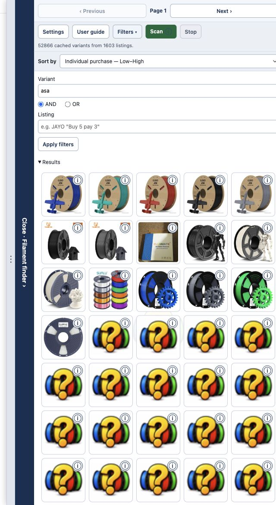
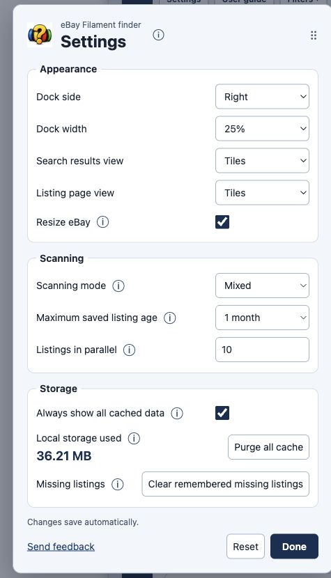
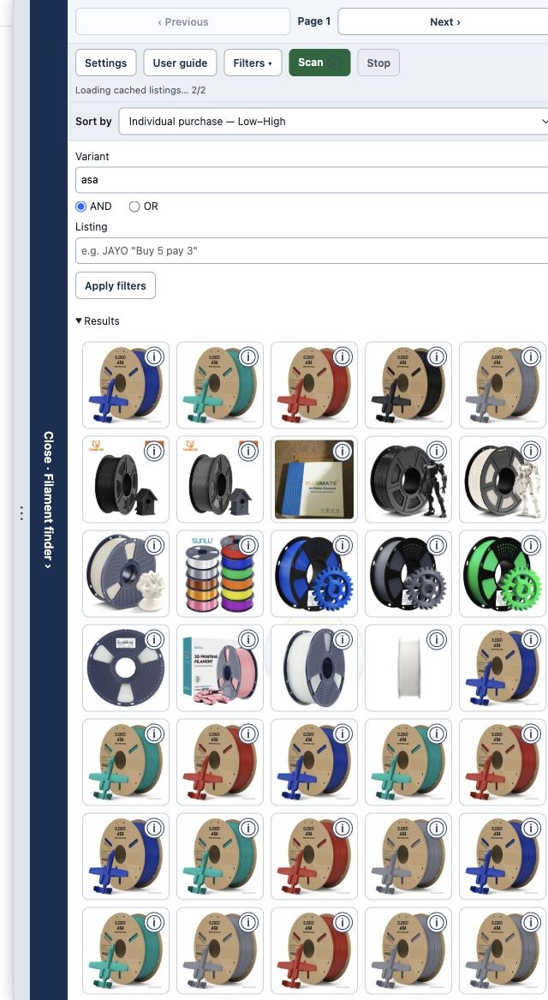

Cache loading shows progress and yields between batches.
WHAT’S NEW IN VERSION 1.4
Keep your finds.
Browse with less waiting.
Persistent saved results, flexible scanning, a new photo grid and a lighter interface for large collections.
Open the complete user guide →
PERFORMANCE / THE BIG CHANGE
All your data. A much smaller screenful of work.
Previously, a large saved collection could leave the finder waiting while thousands of entries were prepared and drawn. Version 1.4 loads saved listings in small asynchronous batches and draws roughly two screenfuls of search results at a time. Scrolling replaces off-screen tiles instead of keeping the entire collection on the page.
Filters and sorting use the full in-memory dataset, with short pauses for the browser to respond.
Tiles, lines and photo grids render a small window. Closed sections defer their entries.
If five tiles fit, roughly ten are drawn—not thousands. Your filter still searches all loaded variants. Cache reuse, deduplication and smaller saved search snapshots further reduce repeated requests and data copying.
The exact improvement depends on your device and collection. Cache reading and in-memory data still take time and space; this is not a fixed speed-up or memory benchmark.
Everything else in 1.4
Pick up where you left off.
Persistent local listing data survives browser restarts. Cached ages are explicit; eligible saved entries load automatically and are skipped during scans. Choose 1 day, 1 week, 1 month or Never dropped.
Search the cache you already built.
Enable Always show all cached data to see every unexpired saved listing for the current eBay marketplace, without revisiting dozens of results pages or starting an active scan.
Choose Background, Visible tabs or Mixed.
Visible tabs reuses one foreground tab. Mixed starts with your parallel background count, pauses new requests after an error, recovers failed listings serially in that tab, then resumes background work. Retry, Skip, Stop and persistent Escape notices keep you in control.
Keep adding results as you browse.
After your first Scan, client-side pagination extends or resumes the queue, without repeating handled listing IDs. Previous/Next controls show the current page. Stop pauses automatic work; navigation never starts the initial scan for you.
Tiles, lines or a wall of photos.
Photos only is a responsive sorted grid with full details under each corner ⓘ, including nested calculation tooltips. Listing and search pages remember their own view and sort settings. Sort by stays visible with A–Z/Z–A and Low–High/High–Low labels.
Clearer names and better promotion estimates.
Individual purchase, Bulk purchase and Mixed bulk average include recognised coupons and applicable saving caps. Parsing supports fixed vouchers, multi-buy tiers, coded promotion banners and advertised subtitle codes. Caps and fixed vouchers apply once per order; conditional offers remain clearly labelled.
Know when saved prices changed.
Opening a listing refreshes its saved variants. Price changes on the opened variant get a persistent banner; other changes get a concise sidebar count. Green means lower, red higher and black mixed changes. Idle search tabs reload updated cache data when activated.
Keep the useful listings.
Refresh or clear one whole listing’s cache. Hide a listing for a day, week or month and unhide it from the collapsed Hidden section. Confirmed missing eBay pages are removed and remembered so ghost results are skipped; Settings can clear all remembered missing IDs.
See and manage your local storage.
Settings shows live local-storage usage and Purge all cache. Expanded local-storage permission supports larger collections. Purging preserves preferences, hidden choices and remembered missing IDs.
A finder that behaves while you browse.
Whole-word title detection opens it for filament. Open panels stay open across results updates. Resize eBay places the finder beside the page instead of over it, while the collapsed rail always keeps its space. Search filters stay under your control.
Smoother reloads and safer photos.
Old page tasks stop cleanly when the extension connection changes. Search snapshots are smaller. Photos keep a placeholder until their own image loads, and the grid updates correctly when the same visible rows reshuffle.
A complete guide inside the extension.
The guide now covers every setting and control, all 16 sorting choices, scanning modes, cache management, price calculations and every view, with real current screenshots. Open it from the sidebar or the icon’s right-click menu.
Look closer.

